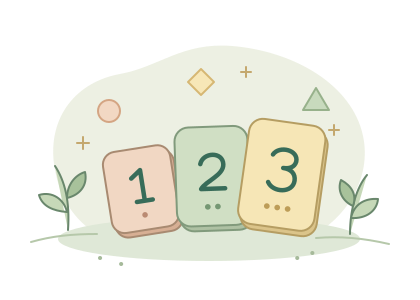

从会的地方出发
花园闯关
从一个小发现开始
今天学什么
看见几朵花
从 1～3 朵开始，把花的数量和数字连起来。

选一条小路
每关最多 4 个小挑战，想走哪条都可以。
小游戏架
数学游戏
数一数
家长小角
家长中心
陪孩子慢慢学
设备声音
开启后可听题、报数和试听。关闭后会隐藏听题与试听按钮，仍可看图和文字继续练习。
声音来自设备。断网时能否朗读，取决于设备上是否已有可离线用的声音。
离线使用
首次联网打开时，会自动保存课程、小游戏和图示。准备好后即可离线练习。
正在准备离线资源…
在 iPad 上，可用 Safari 的分享菜单把小花园添加到主屏幕。
应用更新
联网时可以检查新版本。有新版时，重新加载页面即可更新，已保存的练习记录和设置会保留。
当前版本 待确认
闯关记录
看看孩子在哪些技能上独立做对、换题后做对，哪些还想再练。
查看闯关记录家长小角
闯关记录
这里显示每项技能最近的闯关结果，记录保存在当前浏览器。